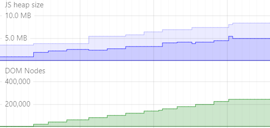
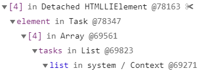
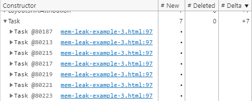
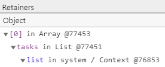
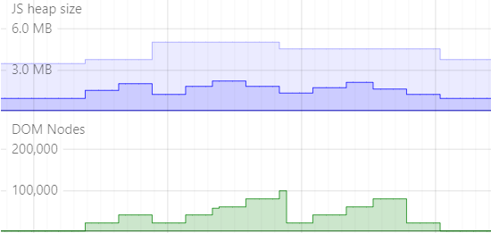
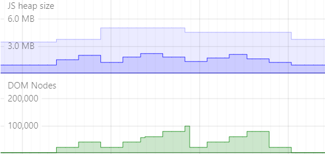

Object linking
var foo;
foo = document.querySelector('DIV');
Lets start off talking about how an Object tree works, we'll start off simple, with 1 root object, the window object.
* Then we define a variable, foo, this is linked from the window object.
* Then we find a DIV node and assign it to our foo variable. Here we can see our Object tree, window, foo, DIV node.
Mark and sweep
Roots
Now to talk at a high level about garbage collection, a common strategy used by browsers is mark and sweep.
* It starts at the root objects, such as window.
* And finds all objects directly linked to it.
* Then it finds all objects directly linked to the new objects it just found, until it reaches the end of the object tree.
* Now it starts at the next root object.
* and
* works its way through the object tree.
* Now it has everything linked with root objects marked
* it can delete all non-marked objects during the sweep cycle.
That is how mark and sweep performes garbage collection.
Clearing object linking
var foo;
foo = document.querySelector('DIV');
foo = null;
Back to our earlier code example and object tree. If we want the DIV to be deleted from memory, we just need to sever its link with a root object.
* We can do this by assigning null to foo. Now there is no link from the DIV object back to our root, window. DIV object will get cleaned up in a future sweep cycle.
Example 1
mem-leak-example-1.html
github.com/sacah/mem-leaks
var divList = [];
function loadPage(container) {
for (let a=0; a < 10000; a++) {
const el = document.createElement('DIV');
el.textContent = a;
divList.push(el);
container.appendChild(el);
}
}
function unloadPage(container) {
container.innerHTML = '';
}
Lets take a look at the code of mem-leak-example-1.html on Github, (switch tabs), see the HTML structure, we have 2 buttons, load and unload. And a DIV with the id of container. (swtich back to slides) Now lets go over the JS, we have a loadPage and unloadPage functions, these are mapped to the load and unload buttons. And when called, it passes in a reference to the DIV with the id of container.
* We loop 10,000 times
* Create a new DIV node, assigned to el
* Set the text of that DIV to the index of our loop
* Add the DIV node to our divList array
* And append the DIV node to our container DIV on the page.
* unloadPage simply justs clears all the DIVs from our container DIV, so they don't appear on the page anymore.
Example 1 - Detecting memory leaks

If we open the Performance Monitor open in DevTools, and run example 1, repeatedly clicking on Load and Unload buttons, we will see graphs like the one on the left. Both the memory usage and DOM nodes size goes higher and higher, everytime we click Load again, it's another step in the DOM Nodes graph, and due to how memory is managed, it's not a straight forward representation on the memory graph, but the fact the memory keeps climbing, and isn't getting cleared is our warning sign. If our example didn't have a memory leak, the graphs on the right is what we should see, sure there are similar stages where the graphs step up higher and higher, but then we see the browser did a garbage collection and the graph goes down again. And at the end when we stopped clicking the buttons and let the browser fully garbage collect, both DOM Nodes and memory went back to the level they were when we started.
Example 1 - Finding memory leak
(demo time)
Go to mem-leak-example-1.html tab
* open Memory tab in DevTools
* take a few JS Heap snapshots to let mem settle
* Then Performance Monitor tab, check 'JS Heap' & 'DOM Nodes'
* Click Load & Unload 7 times
* Show graphs going up
* Go to Memory tab, force GC
* Take snapshots until usage settles, delete all but last one.
* Compare last snapshot to first, sort by Deltas.
* Expand Detached HTMLDivElement, which has +9 999 delta
* We see that this detached HTMLDivElement is referenced by item number 9999 in an Array, next line down, the array is referenced by a variable called divList.
Example 1 - Quiz
What could we add to unloadPage to fix this leak?
container.parentElement.removeChild(container);
divList = [];
delete(divList);
1 - just removes more things from the DOM tree, doesn't clear the link
2 - clears the references from divList to the DOM nodes
3 - returns false, can't delete things defined in global space
Example 2
mem-leak-example-2.html
github.com/sacah/mem-leaks
var log;
function loadPage(container) {
let lastEl;
for (let a=0; a < 50; a++) {
const el = document.createElement('DIV');
el.textContent = a;
log = function () {
console.log(a, el);
}
if (!a) container.appendChild(el);
else lastEl.appendChild(el);
lastEl = el;
}
}
Now we will look at mem-leak-example-2.html. The HTML is the same as our first example, a Load and Unload buttons, except we've changed the loadPage function.
* This time we only loop 50 times
* We create a DIV and set its text to the loop index
* Here we create a log function that console.logs our loop index and the DIV node
* Then we check if A is 0, and we append the DIV to the container DIV, else we append the DIV to lastEl
* And finally we set lastEl to the current DIV we just inserted.
Example 2 - Finding memory leak
(demo time)
Lets take a look this example in devtools.
(Go to Example 2 tab)
We're already setup with the Performance monitor and Memory tab open.
The memory has settles, so lets take a snapshot.
I'll click Load once, and inspect the DIV to show you the structure. (Expand a few divs down)
You can see it's a bunch of nested DIVs.
I'll click Unload, then Load and Unload another 6 times again, watching the graphs below as we do.
Switching back to the Memory tab, and clicking on Profile to see the memory usage, we can see it's stable, so we will take another snapshot.
Notice how the DOM nodes graph looks like a stair case, then had a sudden drop down, to what looks like 1 stair above our starting position. This is a clue, lets compare Snapshot 2 to Snapshot 1 to look further.
Sort by Deltas, and scroll down a bit we see Detached HTMLDivElements again, and there are +50 of these, so even though we did it 7 times, it's only kept 1 loops worth of Div elements linked, which is what we saw in the DOM nodes graph too.
Expanding Detached HTMLDivElement, and clicking on the first item.
In Retainers we can see it's referenced by a Detached HTMLDivElement, and that is referenced by another Detached HTMLDivElement and so on, we follow this down till we hit the Context, a function called log, which is referenced from the Window object.
In the first example, the DOM tree was very flat, so right up the top you saw a detached div element being referenced by an array, and we had to loop 10,000 times and store each one to make a noticable memory leak. In this example, we're replacing the log function each loop, so it's actually just the last DIV element that is being referenced, but because of the DOM structure, that last DIV element has a parent that must also be retained, and so on up the tree to the very first DIV element we created. This is a more real world example, as our HTML pages tend to be complex with elements nested many levels deep.
Example 3 - Challenge
mem-leak-example-3.html
github.com/sacah/mem-leaks
Simple ToDo app with a memory leak, try and find/fix the leak.
Slides beyond this point show you how to solve this challenge.
Example 3 - Finding memory leak
(demo time)
Example 3 - Memory snapshot

class Task {
constructor(title) {
this.title = title;
this.isDone = false;
}
render() {
this.element = document.createElement('li');
this.element.innerText = this.title;
this.element.className = this.isDone && 'done';
this.checkbox = document.createElement('input');
this.checkbox.type = 'checkbox';
this.checkbox.onchange = this.toggle.bind(this);
this.element.prepend(this.checkbox);
this.deleteButton = document.createElement('button');
this.deleteButton.type = 'button';
this.deleteButton.innerText = 'delete';
this.deleteButton.onclick = this.destroy.bind(this);
this.element.append(this.deleteButton);
this.checkbox = null;
this.deleteButton = null;
return this.element;
}
toggle() {
this.isDone = !this.isDone;
this.element.className = this.isDone && 'done';
}
destroy() {
this.element.remove();
}
}
class List {
constructor(container) {
this.container = container;
this.tasks = [];
}
render() {
this.element = document.createElement('ul');
this.container.append(this.element);
}
add(title) {
const task = new Task(title);
this.element.append(task.render());
this.tasks.push(task);
}
}
const list = new List(document.getElementById('todo'));
document.getElementById('form').onsubmit = (event) => {
const el = document.getElementById('task');
list.add(el.value);
el.value = '';
el.focus();
event.preventDefault();
};
list.render();
Example 3 - Simple fix?
class Task {
constructor(title) {
}
render() {
this.element = document.createElement('li');
...
}
toggle() {
}
destroy() {
this.element.remove();
this.element = null;
}
}
Example 3 - Not so simple


Example 3 - Root cause fix
class Task {
constructor(title, onDestroy ) {
this.title = title;
this.isDone = false;
this.referenceObject;
this.onDestroy = onDestroy;
}
render() { ... }
toggle() { ... }
destroy() {
this.element.remove();
this.onDestroy(this.referenceObject);
}
}
class List {
constructor(container) { ... }
render() { ... }
add(title) {
const task = new Task(title, this.destroy.bind(this) );
task.referenceObject = task;
this.element.append(task.render());
this.tasks.push(task);
}
destroy(referenceObject) {
this.tasks.splice(this.tasks.indexOf(referenceObject), 1);
}
}
const list = new List(document.getElementById('todo'));
document.getElementById('form').onsubmit = (event) => {
const el = document.getElementById('task');
list.add(el.value);
el.value = '';
el.focus();
event.preventDefault();
};
list.render();
Go forth and find memory leaks
Thank you for watching, I hope it has been useful.
 
